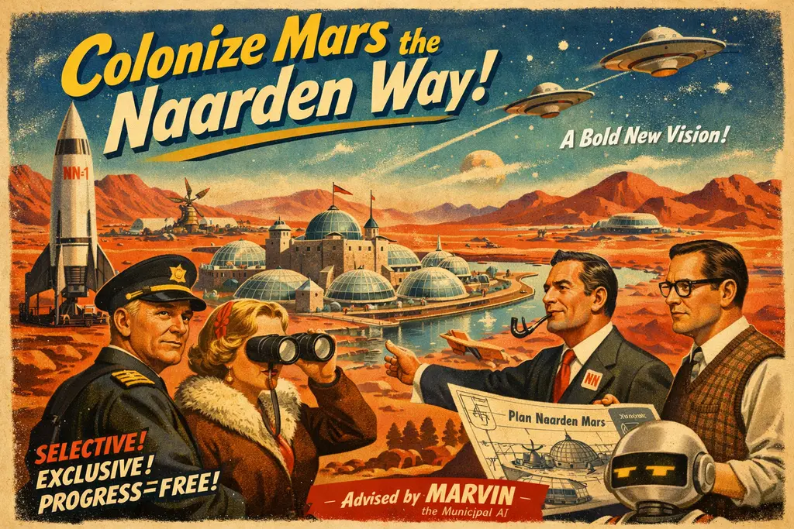

Naarden’s Bold Mars Gambit Raises Eyebrows, Hopes, and One Very Confused Space Billionaire

NAARDEN EYES THE RED PLANET IN A GRAND QUEST TO RESTORE NAERDINCKLANT — BECAUSE EARTH HAS BECOME FAR TOO COMPLICATED
By Amthonie Vandenberg,
European Geopolitical Correspondent
NAARDEN — A delegation of notably self‑important Naarders has announced that they are “actively exploring” the possibility of founding a Martian colony, ostensibly to Make Naarden Great Again. Quite how Naarden was previously great remains a matter of spirited local debate, but the group insists that the ancient splendour of Naerdincklant can be restored — provided the new settlement is populated exclusively by people they personally approve of. This, they claim, is “a bold new chapter in selective community‑building”, a phrase that caused several linguists to quietly leave the room.
Negotiations with space magnate Leon Sumk are said to be progressing “surprisingly well”, though insiders report that Sumk initially assumed the Naarders were pitching a new reality show. Once convinced of their sincerity, he allegedly offered them a modest plot of Martian real estate, complete with optional oxygen supply and a complimentary instruction manual titled So You’ve Decided to Live Somewhere Entirely Unsuitable. The Naarders, who consider themselves pioneers of practical thinking, are said to be reviewing the fine print with the same intensity normally reserved for local parking regulations.
In an effort to justify the endeavour, the delegation has published a brief pseudo‑scientific paper titled A Preliminary Inquiry into the Feasibility of Trans‑Planetary Naardification. The document argues — with diagrams of questionable origin — that Naarden possesses a “unique socio‑gravitational field” which causes local decision‑making to drift steadily toward the improbable. According to the paper, this field intensifies whenever committees meet within 200 metres of the Vesting, explaining why the Martian proposal escalated from “a thought experiment” to “a fully fledged interplanetary relocation strategy” in under forty‑five minutes.
The authors further claim that Mars is “ideally suited” for Naardense civilisation due to its “refreshingly empty zoning laws”, “low pedestrian traffic”, and “complete absence of Bussum”. Critics have pointed out that Mars also lacks oxygen, water, infrastructure, and any known appreciation for cardigan‑based cultural identity, but these objections were dismissed as “unhelpfully literal”.
To assist with the planning, the delegation consulted an experimental advisory system known as the Municipal Autonomous Reasoning Vector for Interplanetary Navigation, or MARVIN for short — a name chosen before anyone realised the implications.
MARVIN, whose personality has been described as “perpetually unimpressed”, reportedly analysed the proposal for 0.003 seconds before announcing that the probability of success was “statistically indistinguishable from the likelihood of Bussum developing a sense of humour”. When asked for constructive feedback, the system sighed audibly through its cooling vents and suggested that the delegation “consider remaining on Earth, where failure is at least familiar”.
Despite this, the Naarders insist MARVIN is “broadly supportive”, citing a moment in which the AI muttered, “Fine, go to Mars, see if I care,” which they interpreted as enthusiastic approval.
The proposed colony is intended to be “straightforward, sensible and refreshingly unwoke”, despite the fact that Naarden itself contains no gay bars, no rainbow crossings, and only one yoga studio that occasionally experiments with mindfulness. Nevertheless, the delegation fears that the town may soon become “too progressive”, possibly due to rumours that someone in the Vesting recently purchased a brightly coloured cardigan. The Martian settlement, they insist, will be a place where people can live free from such alarming developments — a vision that hinges largely on the aforementioned selective admission policy.
News of the initiative has reached global personality Laddon Prumt, who responded with a full, characteristically expansive statement:
“Let me tell you, folks, what these wonderful people in Naarden are doing — absolutely incredible. Truly historic. They’re going to Mars, and they’re doing it better than anyone has ever gone to Mars before, believe me. Everyone’s talking about it. The whole world. Some say it’s impossible, but I say it’s inspirational — a perfect example, a tremendous example, of how local communities can lead the way. Fantastic people, fantastic project, and I’m very, very proud of them.”
He has reportedly offered to deliver an inspirational message at the colony’s opening ceremony, though sources close to him admit that he has not yet grasped that the event will take place on Mars. Still, enthusiasm is enthusiasm, and the Naarders are delighted to have his support — even if they are quietly hoping he won’t insist on naming the first settlement Prumtropolis, a suggestion that has already caused one astronomer to drop his telescope in despair.